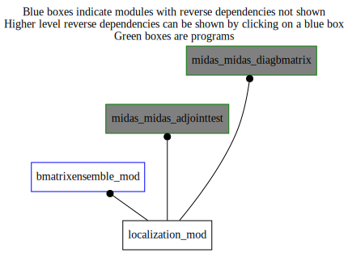

Dependency Diagrams:
Direct Dependency Diagram¶
 Reverse Dependency Diagram¶
Description
MODULE localization_mod (prefix=’loc’ category=’2. B and R matrices’)
- Purpose
Master module for the computation of localized 3D gridpoint amplitude fields for each ensemble member from a given (1D) control vector
Quick access
- Variables
- Routines
loc_expandtompiglobal(),loc_expandtompiglobal_r4(),loc_finalize(),loc_lsqrt(),loc_lsqrtad(),loc_reducetompilocal(),loc_reducetompilocal_r4(),loc_setup()Needed modules
midasmpi_mod: MODULE midasMpi_mod (prefix=’mmpi’ category=’8. Low-level utilities and constants’)
utilities_mod: MODULE utilities_mod (prefix=’utl’ category=’8. Low-level utilities and constants’)
localizationspectral_mod: MODULE localizationSpectral_mod (prefix=’lsp’ category=’2. B and R matrices’)
horizontalcoord_mod: MODULE HorizontalCoord_mod (prefix=’hco’ category=’7. Low-level data objects’)
verticalcoord_mod: MODULE verticalcoord (prefix=’vco’ category=’7. Low-level data objects’)
ensemblestatevector_mod: MODULE ensembleStateVector_mod (prefix=’ens’ category=’6. High-level data objects’)Types
- type localization_mod/unknown_type¶
- Type fields
% cvdim [integer ]
% hco [struct_hco ,pointer]
% initialized [logical ]
% loctype [character ]
% lsp [struct_lsp ,pointer]
% nens [integer ]
% nensoverdimension [integer ]
% null [struct_lsp ,pointer]
% vco [struct_vco ,pointer]
Variables
- localization_mod/struct_loc [public]¶
Subroutines and functions
- subroutine localization_mod/loc_setup(loc, cvdim_out, hco_loc, vco_loc, nens, vertlocation, ntrunc, loctype, locmode, horizlengthscale1, horizlengthscale2, vertlengthscale)¶
- Arguments
loc [struct_loc ]
cvdim_out [integer ,out]
hco_loc [struct_hco ,in,pointer]
vco_loc [struct_vco ,in,pointer]
nens [integer ,in]
vertlocation (*) [real ,in]
ntrunc [integer ,in]
loctype [character ,in]
locmode [character ,in]
horizlengthscale1 [real ,in]
horizlengthscale2 [real ,in]
vertlengthscale [real ,in] :: IN
- Called from
- Call to
- subroutine localization_mod/loc_lsqrt(loc, controlvector, ensamplitude, stepindex)¶
- Arguments
loc [struct_loc ]
controlvector (*) [real ,in]
ensamplitude [struct_ens ] :: OUT
stepindex [integer ,in]
- Called from
- Call to
- subroutine localization_mod/loc_lsqrtad(loc, ensamplitude, controlvector, stepindex)¶
- Arguments
loc [struct_loc ]
ensamplitude [struct_ens ] :: INOUT
controlvector (*) [real ,out]
stepindex [integer ,in]
- Called from
- Call to
- subroutine localization_mod/loc_finalize(loc)¶
- Arguments
loc [struct_loc ]
- Called from
- Call to
- subroutine localization_mod/loc_reducetompilocal(loc, cv_mpilocal, cv_mpiglobal)¶
- Arguments
loc [struct_loc ]
cv_mpilocal (*) [real ,out] :: OUT
cv_mpiglobal (*) [real ,in]
- Called from
- Call to
- subroutine localization_mod/loc_reducetompilocal_r4(loc, cv_mpilocal, cv_mpiglobal)¶
- Arguments
loc [struct_loc ]
cv_mpilocal (*) [real ,out] :: OUT
cv_mpiglobal (*) [real ,in]
- Called from
- Call to
- subroutine localization_mod/loc_expandtompiglobal(loc, cv_mpilocal, cv_mpiglobal)¶
- Arguments
loc [struct_loc ]
cv_mpilocal (*) [real ,in]
cv_mpiglobal (*) [real ,out]
- Called from
- Call to
- subroutine localization_mod/loc_expandtompiglobal_r4(loc, cv_mpilocal, cv_mpiglobal)¶
- Arguments
loc [struct_loc ]
cv_mpilocal (*) [real ,in]
cv_mpiglobal (*) [real ,out]
- Called from
- Call to
{kind=link}
{kind=link}